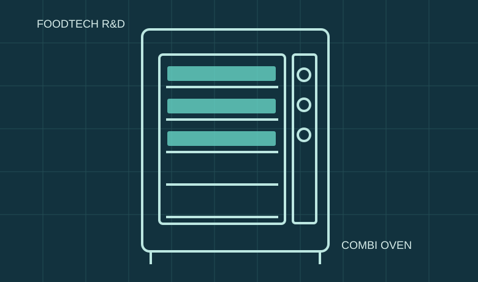

PRECISION KITCHEN ENGINEERING · SINCE 1995
위생적이고 안전한 주방은
조리과학에서 시작합니다.
조리과학과 운영 조건을 이해하고 설계부터 설비 선정과
유지관리까지 하나의 흐름으로 연결합니다.

1995한빛산업 설립
2007나라장터 등록 조달업체
제조업체상업용 오븐 · 조리기자재
A/S · B/S설치 이후 유지관리
WHAT WE DESIGN
조리기보다 먼저 운영을 설계합니다.
학교급식 설비부터 컨설팅까지 여섯 분야로 나눠 현장에 맞는 해법을 찾습니다.
01 / SCHOOL FOOD SERVICE
학교급식 설비
조리와 세척 및 배식 구역의 흐름과 환기 조건을 함께 살피는 시설 계획입니다.
02 / COMMERCIAL KITCHEN상업용 주방
작업 동선과 설비 배치를 검토하고 공조·덕트와 설치 조건까지 연결합니다.
03 / BAKERY MACHINERY제과제빵기계
오븐과 도우컨디셔너 등 공정별 장비를 운영 규모에 맞춰 구성합니다.
04 / RETAIL EQUIPMENT매장 판매설비
진열과 보온 및 판매 단계의 장비를 매장 환경에 맞게 제안합니다.
05 / R&D PROJECTS연구개발 프로젝트
조리과학 연구를 기반으로 조리기자재를 설계하고 시제품을 검증합니다.
06 / CONSULTING컨설팅
현장 진단에서 공간 설계와 기자재 선정 및 운영 검토까지 함께합니다.
RESEARCH & DEVELOPMENT조리과학을 이해하고
조리과학을 이해하고
주방공간을 설계합니다.
한빛산업은 쌀가루 조리법과 조리기자재 개발 연구를 수행하며 조리 대상과 장비의 관계를 함께 연구해 왔습니다.
- 쌀가루 가정·외식용 조리법 및 조리기자재 개발
- 오븐 내 온도·수분 분포와 조리 적합성 연구
- 복합 오븐과 조리 소도구의 설계·시제품 테스트

EQUIPMENT CATALOGUE
시그니처 설비부터 예산 맞춤 장비까지
급식실 현대화 설비와 제과제빵 장비를 중심으로 냉장·냉동 보관과 조리·위생 기구를 함께 제안합니다.
급식실 환경 개선 라인공조·덕트 · 인덕션 국솥·밥솥 · 부침기 · 튀김기
베이킹 핵심 라인오븐 · 믹서기 · 도우컨디셔너 · 발효기 · 숙성기 · 쇼케이스
급식실 위생·보관 라인냉동냉장고 · 급속냉동고 · 조리기자재 · 스테인리스기구
SELECTED PROJECTS
자료가 확인된 프로젝트를 소개합니다.
대학과 학교 및 교육기관의 급식시설과 실습실 설비를 수행했습니다.
PROJECT
HP대학 인천캠퍼스
학생·교직원 식당 급식시설
자세히 보기 ↗PROJECTHP강서캠퍼스
조리실 변경·기자재 계획
자세히 보기 ↗PROJECT
HP남인천캠퍼스
조리기자재 배치·공간 개선
PROJECT
H제과학교
제과 실습실 설비
PROJECT
S중학교
학교 급식실 설비
PROJECT
H중학교
학교 급식실 설비
OUR PROCESS
설계부터 운영까지 하나의 흐름으로
01
상담·조사
규모와 운영 방식 및 설비 현황 파악
02
분석·설계
동선·설비·공조 계획 수립
03
제작·조달
시방과 기자재 구성 검토
04
시공·사후관리
설치·시운전과 유지관리 대응